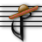

Using keyboard shortcuts
You can compose more efficiently by using keyboard shortcuts to change the duration and characteristics of the notes you're placing, rather than moving your mouse back up to the toolbar. The most important keyboard shortcuts are listed below:
| Key | Action |
| A-G | Places a note at the pitch typed where the mouse is currently pointing, close to the previous note. For example, pressing A places the closest A note to the previous note. |
| Spacebar | Places a rest where the mouse is currently pointing. |
| 1-6 | Changes the duration of the note you're placing. The duration menu lists the appropriate number beside each duration. |
| ` | Changes to selection mode. While in selection mode, clicking the mouse will always select notes/rests instead of placing new ones. |
| Left/right arrows | Cycles through the available note durations. |
| . | Toggles the dotted duration setting. |
| T | Toggles the triplet duration setting. |
| [ | Toggles whether the note placed will be tied to the note before it (when possible). |
| P, ;, / | Toggles the accidental setting. For instance, to place sharp notes, press P. If the sharp checkbox is already checked, press P again to place regular notes, or press ; or / to place notes with a different accidental. |
| ENTER | Plays the song. |
| ESC | Stops playing the song. |
| + | Adds a new staff. |